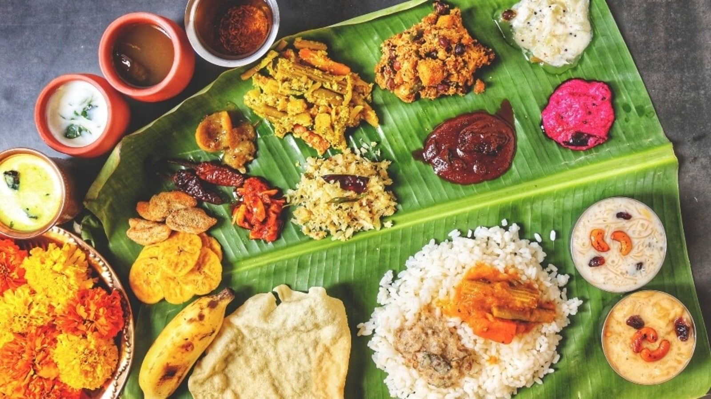
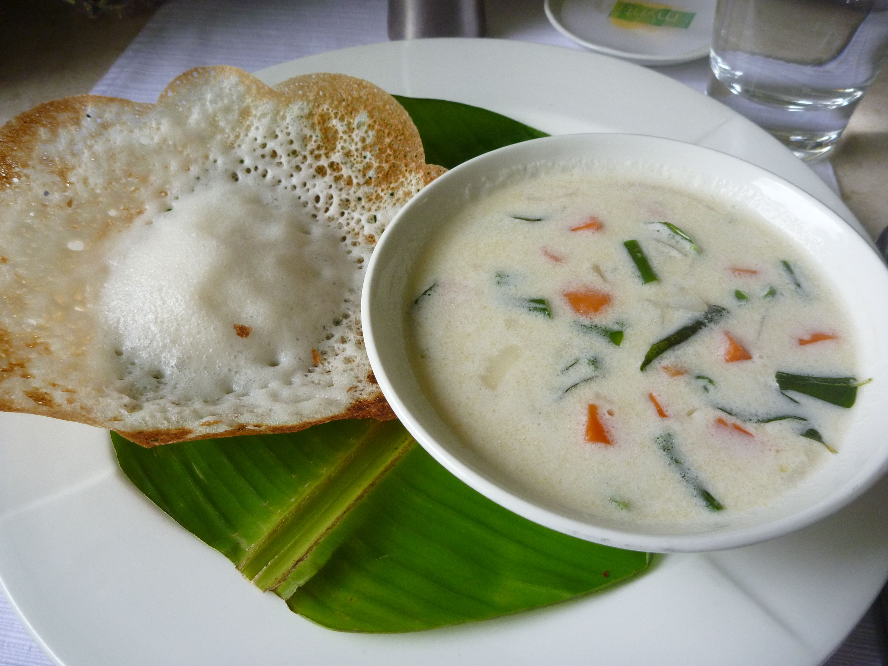
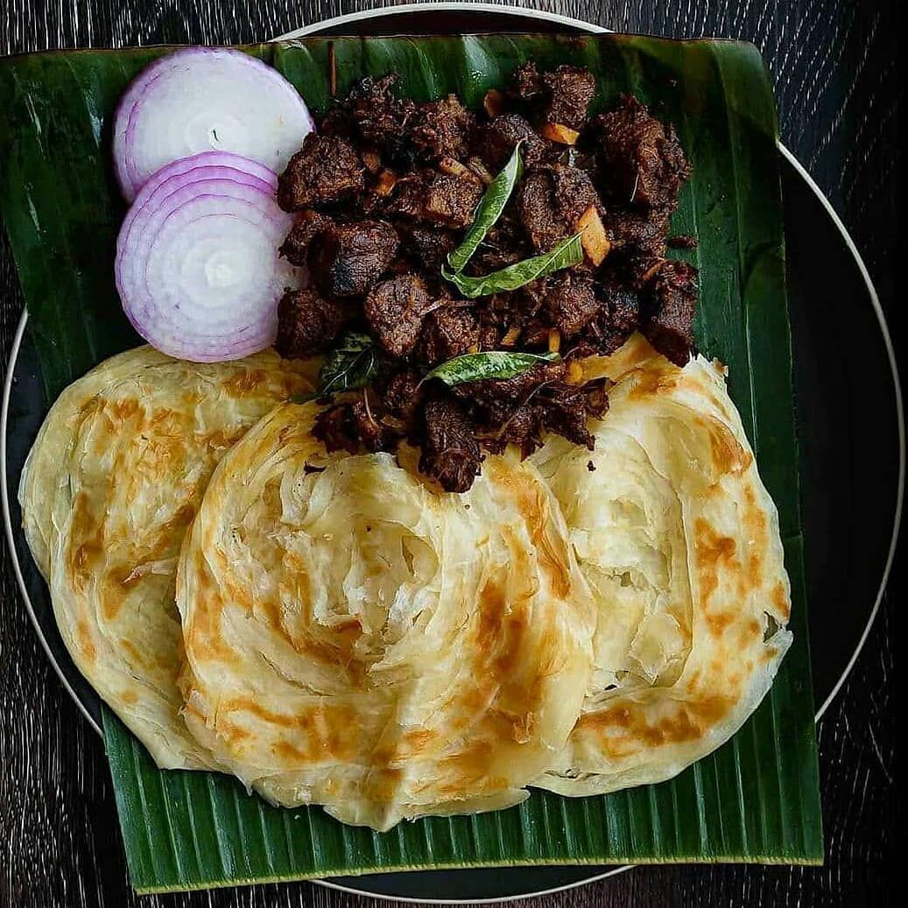
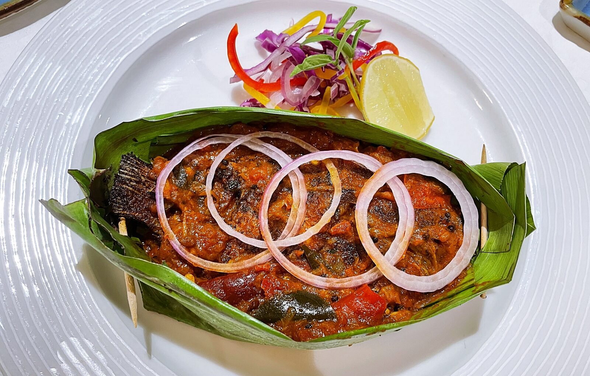
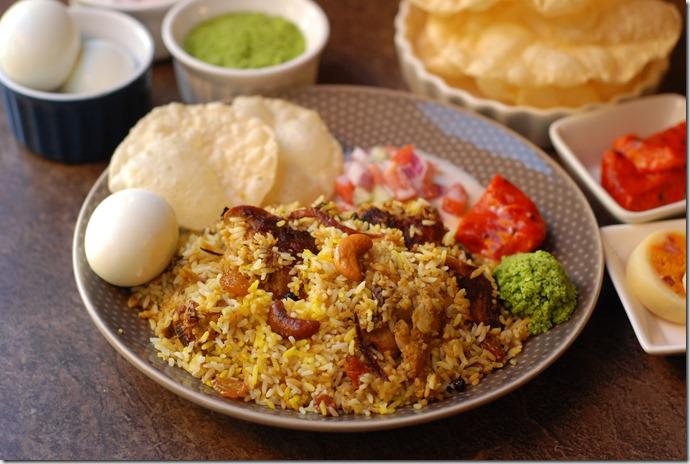

Exploring the vibrant flavours of Kerala
1. Sadya
- Traditional vegetarian feast
- Served on a banana leaf
- Includes rice and multiple curries
- Papadam and pickles
- Payasam (sweet dessert)
2. Puttu and Kadala Curry

- Puttu - steamed rice cake
- Kadala - black chickpea curry
- Popular breakfast dish
- Often served with banana
- Best enjoyed with coconut
3. Appam and Stew
- Appam - soft rice pancake
- Served with coconut milk-based stew
- Stew contains vegetables or meat
- Aromatic with curry leaves
- Popular in Christian households
4. Kerala Parotta and Beef Curry
- Layered flatbread
- Made with refined wheat flour
- Beef curry is rich and spicy
- Popular street food
- Best served hot
5. Karimeen Pollichathu
- Pearl spot fish delicacy
- Fish marinated with spices
- Wrapped in banana leaf
- Slow-cooked for flavor
- Served with rice
6. Malabar Biryani
- Fragrant rice dish
- Uses Jeerakasala rice
- Cooked with meat and spices
- Garnished with fried onions
- Served with raita
7. Pazham Pori

- Banana fritters
- Made with ripe plantains
- Deep-fried in batter
- Popular tea-time snack
- Crispy and sweet